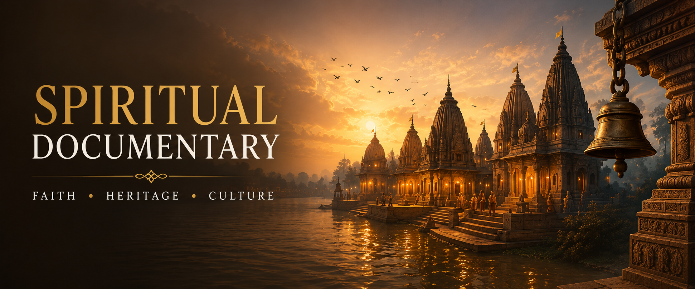

Spiritual Documentary
Preserving faith, heritage and timeless traditions through meaningful visual storytelling that inspires, educates and connects generations.
Stories Rooted In Faith & Culture
Every spiritual documentary is more than just a film. It is a journey that preserves sacred traditions, temple heritage, inspiring personalities, devotional practices and cultural values for future generations.
From concept development and research to scriptwriting, narration and creative execution, every project is designed with authenticity, emotion and cinematic storytelling.
Documentary Categories
Every spiritual story deserves a meaningful cinematic presentation. Explore the diverse documentary categories crafted by Shabdvid.
Temple Documentaries
Sacred temples, architecture, rituals and spiritual heritage.
Saint Biographies
Inspiring lives of saints, gurus and spiritual leaders.
Pilgrimage Films
Divine journeys, yatras, festivals and holy destinations.
Cultural Heritage
Preserving traditions, customs and India's rich legacy.
Devotional Stories
Inspirational stories based on faith, values and spirituality.
Custom Documentary Projects
Tailor-made documentaries for trusts, temples and organizations.
Services Included
End-to-end creative solutions for spiritual documentary filmmaking.
Research
Concept Development
Script Writing
Interview Planning
Voice Over Script
Creative Direction
Production Support
Post Production Guidance
How We Create
01
Research
02
Concept
03
Script Writing
04
Production
05
Editing
06
Final Delivery